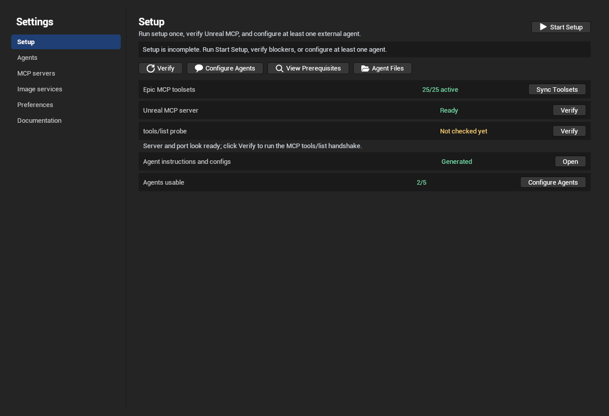

What you need.
| What | Why | Notes |
|---|---|---|
| Windows 10 or 11, 64-bit | HyperAI Studio is a Win64 editor plugin. | It never ships in a packaged game. |
| Unreal Engine 5.8 | It is built for Epic's Unreal MCP in 5.8. | Blueprint and C++ projects both work. |
| At least one agent CLI | The agents do the work; HyperAI hosts and supervises them. | Claude Code, Codex or Gemini CLI, each signed in to its own account. Setup can install them. |
| Node.js 20+ and npm | Gemini CLI and community MCP servers run on Node. | Only needed for Gemini or extra servers. Git is recommended for everything. |
| Visual Studio 2022 with C++ | Only to build the plugin or your project's C++ from source. | Agents that change C++ rebuild through hyper_editor_restart. |
The Unreal plugins HyperAI relies on switch on with it: ModelContextProtocol (Unreal MCP), ToolsetRegistry, EditorToolset, MCPClientToolset, Terminal, FileSandbox and PythonScriptPlugin. Packs for Niagara, PCG, GAS, Enhanced Input, MetaSounds and the rest light up when your project enables those plugins.
Install the plugin.
- Get HyperAI Studio.From Fab in the Epic Games Launcher, install it to Unreal Engine 5.8; or copy the plugin folder into your project's
Plugins/folder. - Enable it.Open your project, go to Edit › Plugins, find HyperAIStudio under AI, tick it, and restart the editor when asked.
- Open the Studio.Press Ctrl+Alt+H, choose Tools › HyperAI Studio, or click the HyperAI button in the status bar. Every feature is a page in this one window; Ctrl+K searches pages and actions.
One button: Start Setup.
Open Settings › Setup and press Start Setup. It does, in order:
- Configure Unreal MCP.It sets up Epic's server and enables the Unreal plugins HyperAI needs. If it enabled any, restart the editor when it asks, then press Start Setup again.
- Start the server.Unreal MCP listens at
http://127.0.0.1:8000/mcp. Change the port under Preferences › Unreal MCP if 8000 is taken. - Sync Epic's toolsets.Agents then see every Unreal tool; the row shows how many are active.
- Write the agent files.Instructions, MCP configs, skills and helper scripts, all listed below.
Then press Verify. Each row turns green when it is ready: Epic MCP toolsets, Unreal MCP server, the tools/list probe (a real MCP handshake), Agent instructions and configs, and Agents usable. A row that is not ready says why and offers the fix.

Setup never restarts the editor on its own. When it enables a plugin, it tells you, and picks up where it stopped after you restart.
Add an agent.
Open Settings › Agents. Codex is on by default; turn on the others you use. For each one HyperAI shows whether its CLI is installed, and an Install button runs the official installer in a visible terminal:
| Agent | Install command HyperAI runs | Then |
|---|---|---|
| Claude Code | powershell -ExecutionPolicy Bypass -Command "irm https://claude.ai/install.ps1 | iex" | Run claude once and sign in with your Anthropic account. |
| Codex | powershell -ExecutionPolicy Bypass -Command "irm https://chatgpt.com/codex/install.ps1 | iex" | Run codex once and sign in with ChatGPT or an API key. |
| Gemini CLI | npm install -g @google/gemini-cli | Needs Node.js 20+. Run gemini once and sign in with Google. |
| Cursor | winget install -e --id Anysphere.Cursor | An editor agent: HyperAI writes its MCP config; you work in Cursor. |
| VS Code + Copilot | winget install -e --id Microsoft.VisualStudioCode | Copilot's agent mode reads the MCP config HyperAI writes. |
If an agent still shows Missing after installing, restart the editor so it sees the new PATH. Pick your preferred agent on the same page (Codex until you change it): it takes chats nobody routed and every Match job.
Agents run on their own accounts. What they do counts against your Claude, ChatGPT or Google plan, exactly as it would in a terminal.
What setup writes.
Everything goes where each agent expects it, at the project root. Configs are written only for agents you turned on; existing JSON configs are merged, and a malformed one is left untouched with a message instead.
| Path | For | What it is |
|---|---|---|
AGENTS.md | Every agent | Project instructions: how to reach Unreal, fast paths, replies, domain guides, and the Project Memory block. Only HyperAI's marked block is rewritten; your own text stays. |
CLAUDE.md | Claude Code | A thin file that imports AGENTS.md. |
.mcp.json · .codex/config.toml · .gemini/settings.json · .cursor/mcp.json · .vscode/mcp.json | Each client | The unreal-mcp server entry, plus any extra servers you added. In Codex's TOML only a delimited block is managed. |
.agents/skills/ → .claude/skills/ | Codex, Claude Code | Project skills, HyperAI's built-in ones among them, mirrored for Claude Code. |
.hyperai/agents/ → .claude/agents/, .codex/agents/ | Claude Code, Codex | When you add the team: its six subagents, defined once and written for both. |
.claude/workflows/ | Claude Code | When you add the team: hyperai-team, hyperai-match and hyperai-verify. |
.hyperai/scripts/ | Agents, you | Start-HyperAIStudioEditor.ps1 starts or reconnects the editor; Wait-HyperAIStudioMCP.ps1 waits for MCP and checks tools/list. |
.hyperai/docs/ | Agents | The tool guide listing every toolset, tool and field, and cookbooks for animation, UAF and images. |
.hyperai/memory/ | Everyone, via Git | Project memory: one file per note, and an index. |
.hyperai/work/ | Everyone, via Git | Agents' work folders for substantial tasks: plans, decisions and logs. |
.hyperai/runtime/ | This machine | Git-ignored: the operation journal, task history, recent changes and status. |
Commit everything except .hyperai/runtime/, which is Git-ignored: it is this machine's working state.
Keys and image services.
HyperAI never stores a key. A service names the environment variable its key lives in, and HyperAI reads it at the moment it calls.
- Nano Banana (Google Gemini API).Get a key from Google AI Studio (Settings › Image services › Get a key), set it as the user environment variable
GEMINI_API_KEY, and restart the editor. - Other image models or services.Add them under Settings › Image services: a service with its base URL and the name of its key's variable, then a model with its path and request template. OpenAI-style, Automatic1111 and Gemini-style replies are all understood.
- Set a spend cap.External Service Session Spend Cap (default 5.0 per editor session) refuses any paid call that would pass it; zero refuses them all. Every paid image also shows its price before you press Generate.

Codex and Gemini CLI can also draw on your own plan, with no key: codex_image_gen and gemini_image_gen.
Check it works.
- Home says Running.The Home page shows Unreal MCP: Running with its endpoint, and each agent you turned on as Installed.
- Ask an agent.Open Chat, and send: "What level is open, and what lights are in it?". The agent calls Unreal through MCP and answers from the live editor.
- Try an edit.Ask: "Add a point light above the player start." The edit waits in Activity for your approval, runs as one undo step, and Ctrl+Z takes it back.
If you work in a terminal instead, an agent can start or reconnect the editor itself with .hyperai/scripts/Start-HyperAIStudioEditor.ps1, and waits for MCP before it continues.
Optional extras.
- The team. Agents › Add the Team installs the six roles, the team skill and workflow. The chat's Team switch adds them the first time you use it.
- Python scripting. Preferences › Allow Agents To Run Python Scripts adds
hyper_script_run: editor Python inside one undo step. Scripts that delete, rename, load levels or write files wait for approval. - Extra MCP servers. Settings › MCP servers adds HTTP or command servers beside Unreal's, and imports shareable
hyperai-mcp.jsonprofiles. Test runs a harmlessinitializeandtools/list. - Sandbox Mode. Holds every save, yours included, in a UE File Sandbox until you approve or discard all of it.
- Language. Preferences › Interface › HyperAI Language: English, Simplified Chinese, or the editor's own.
When something is missing.
| You see | Do this |
|---|---|
| Setup asks to restart | It enabled an Unreal plugin. Restart the editor, then Start Setup again. |
| Unreal MCP server not ready, or the port is in use | Another program has port 8000. Set Unreal MCP Port in Preferences and press Start Setup; the configs follow. |
| An agent shows Missing after installing | Restart the editor so it sees the new PATH. |
| The agent has no Unreal tools | Its session started before the server. In the chat, stop and start the agent. In a terminal, run .hyperai/scripts/Wait-HyperAIStudioMCP.ps1 -TimeoutSeconds 90, then reload its MCP servers. |
| A config was not updated | It is malformed JSON; HyperAI leaves it alone rather than risk it. Fix or delete it, then Start Setup. |
| Gemini will not install | Install Node.js 20+ first (winget install -e --id OpenJS.NodeJS.LTS), then Install again. |
| Nano Banana says the key is missing | Set GEMINI_API_KEY for your user and restart the editor; the editor reads variables at start. |
| Anything else | Run HyperAIStudio.Status or HyperAIStudio.Prerequisites in the console: they log every check with its state. |